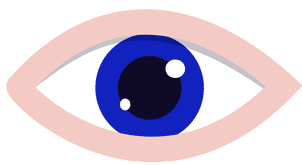

Color your life

The Human Eye
Humans have a complicated trichromatic color vision system.The main component of this fascinating system is the eye.It captures photos like a camera, in fact cameras are built on the eye's anatomy!
Learn More

Human Vision
The human's vision system is the largest sensory system, making up to 70% of all the sensory receptors in the human body! The physiology of the vision process's even more fascinating, get ready to be thrilled.
Learn More
Experiencing Colors
Colors make the world flavorful. We strongly connect them to our emotions. They convey messages beyond words. If you are lucky enough to perceive colors, why don't you learn how you do so?
Learn More